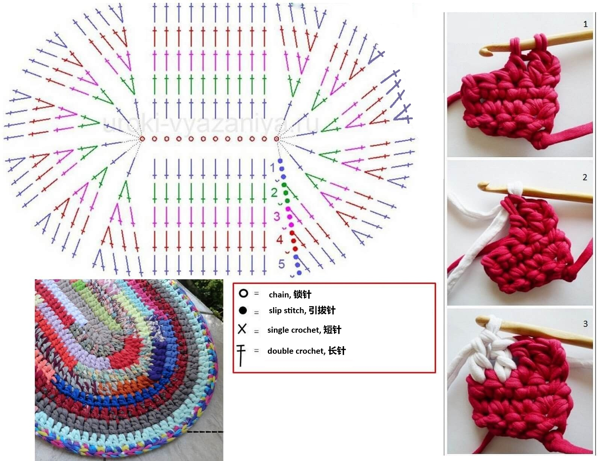

🧶 Knitted Sustainable Rug
Turn old t-shirts into a beautiful, eco-friendly rug! This tutorial will guide you step by step through the process of creating your own sustainable home decor.
- 👕 Old t-shirts
- ✂️ Scissors
- 🪝 Crochet hook (size 8-10mm recommended)
🌿 Ready to start?



🌿 Beginning
Make a chain of 12 chain stitches ().
📌 Row 1
Add 3 .[We will do this in the beginning of each row.]
Work 5 - they all go to the 4th chain from the hook.
Work 1 into each chain to the end of the row.
In the last chain, work 6 [this creates the rounded end].
Now continue along the opposite side of the chain: work 1 into each chain across, starting from the first chain (next to the one where the 6 double crochets were just made). You should make 10 before the end of the row.
Join with a
to the top of the turning chain.
📌 Row 2
Start new row with 3 , then work 1 in the first stitch.
In each of the following 5 stitched, work 2 .[this creates the rounded end]
Now work 1 into the following 10 stitches until you reach the rounded end.
Work 2 (the rounded part).
In each of the following 6 stitched, work 2 .[this creates the rounded end]
Join with a
to the top of the turning chain.
📌 Rows 3 and further
Continue working in the same way, following the increase pattern:
- On straight sides: 1 per stitch.
- On rounded ends: increase evenly following the pattern below.
Follow the instructions for the round end shown in the figure:

📋 Increase pattern for rounded ends:
- 3rd row: 2 + 1 in the next stitch → repeat 6 times.
Note: In the beginning of each row, one DC is replaced by 3 chain stitches. - 4th row: 2 + 2 in the next 2 stitches → repeat 6 times.
- 5th row: 2 + 3 in the next 3 stitches → repeat 6 times.
- 6th row: 2 + 4 in the next 4 stitches → repeat 6 times.
- And so on... Each row increases the number of single DCs by 1 before repeating.
🔁 Stitch references: · · ·
✂️ How to Cut a T-shirt into Yarn
There are three ways to cut a t-shirt into yarn. Choose the method that works best for you!
📌 Option 1: Maze / Spiral Method

- Lay the t-shirt flat on a table
- Cut straight across just under the armpits (remove the top part with sleeves)
- Cut off the bottom hem completely
- Make a small diagonal cut at one side edge to start
- Cut in a continuous spiral (maze pattern) around the tube
- Keep each strip about 2 cm wide
- Do NOT cut all the way to the end - leave about 1-2 cm connected at the top
- Continue cutting until you reach the top (armpit area)
- Cut the last connection point diagonally to create one long continuous strip
- Stretch the yarn firmly - it will curl into soft, stretchy yarn!
📌 Option 2: Back & Forth Method

- Lay the t-shirt flat on a table or cutting mat
- Cut straight across just under the armpits (remove the top part with sleeves)
- Cut off the bottom hem completely
- Starting from the bottom, cut 1-2 cm wide strips horizontally
- Stop cutting 2-3 cm before reaching the armpit on each side
- You will get loops connected at the top (like a fringe)
- Open the loops and cut diagonally at one end
- This creates one long continuous strip of yarn
- Stretch the yarn firmly - it will curl into soft, stretchy yarn!
📌 Option 3: Classic Fold & Cut Method

- Lay an old t-shirt out flat on a table or cutting mat
- Cut across the shirt at the armpits and cut off the bottom hem
- You should now have a large, flat loop of fabric (a tube shape)
- Cut strips about 1 inch thick across the shirt, stopping about 1 inch from the other side (do not cut all the way through)
- You should have dangling loops hanging on your arm. Cut diagonally from the end of the first loop to the start of the following loop to create one continuous strand
- Pull the fabric to create rounded yarn! Stretch each strip firmly - it will curl into soft, round t-shirt yarn
- Your t-shirt yarn is ready for crocheting!
- Use sharp scissors for clean cuts
- Wider strips = thicker, chunkier rug
- Narrower strips = finer, lighter rug
- Stretch each strip well before crocheting - it will curl into round yarn!
- Roll the yarn into a ball for easy storage
- For best results, use 100% cotton t-shirts without side seams